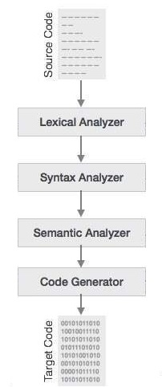

The Lexer
Last edit: April 1, 2022 (no this part ain't a joke)
So now that we got a WASM file running it's time to look closer at how we achieve such a file since Assembly files aren't found in the wild like some animals. No they are created through the use of a compiler that compiles the code written in more high level (and more readable) languages. In this part, the Parser and the compiler we are going to take a closer look at how we can go from a webassembly Text (WAT) file to our "Beloved" WebAssembly (WASM) we have seen before. To give a bit more of an overview of these steps and their order check the following picture:
You can see that the terms are quite different than we mentioned but for clarity: Lexical analyzer is the Lexer, the Syntax analyzer and the Sematic Analyzer make up the Parser and finaly the code generator is our compiler. I'd like to point out that this isn't all that there is to a compiler a more complete design can be found here.
Introduction to the Lexer
Ok so now that the overview of our compiler is done let's look closer at what this section actually contains. "The Lexer", this part's main function is to do some pre processing of our source code. Think of things like comments and detecting variables/function calls. aswell as stuff like Strings, Numbers ,... will be done here. All of these small parts that make up the source code will later on be known as "Tokens".
Tokens
So as we said we analyze the parts of our code and kind of convert them to tokens which will be processed in later parts. But what exactly are these tokens.
class Token { private: TypeOfToken type; std::variant< uint32_t, std::string> value; public: Token(TypeOfToken type, std::string value) : type{ type }, value{ value } {} Token(TypeOfToken type, uint32_t value) : type{ type }, value{ value } {} };
As can be seen there isn't much to our tokens. They simply have a value and we also identify them as a type of property. for example a string will be identified as a string and a variable will be identified as a identifier. You can also see the use of a variant which is a C++17 or above function (so still quite new), what this does is that we enforce that our value is of one of the listed types in our variant. Kind of like a union but we don't necessarily use the same space as our largest item in the union. Just the space of our current type. In the enum class here you can see the types that can be defined in our tokens. These should be pretty self explainatory.
enum class TypeOfToken { Identifier, Bracket_Open, Bracket_Close, String, Number };
Overview of the Lexer
Now that we know what tokens are and what part the lexer plays Let's look at what's actually inside of it. As can be expected we keep a vector of our tokens. Maybe a bit less expected is the return of the Bytestream and to give it a bit more context as to why we use it here is since it doesn't matter what your file looks like in the end it's just bytes in a row and for that the actual syntax used in the file doesn't matter for our bytestream. And since it has functions like "readchar" and "readbyte" that we need in the same way as before we might aswell use our existing implementation. The extracts should be quite clear in function, they simply mean "give me this out of the bytestream and make a token out of it". These are private because we only want to use them upon lexing our file which is done through the "Lexbytestream" function (that get's called upon construction).
#include <vector> #include "Token.h" #include "ByteStream.h" class Lexer { private: std::vector<Token> tokens{}; Bytestream *bytestream; void lexBytestream(); Token extractNumber(); Token extractIdentifier(); Token extractString(); void removeComment(bool isMultiline); public: std::vector<Token> getTokens() { return tokens; } Lexer(std::string path); };
Now you got an overview of what our Lexer does, let's look at it's part in more detail.
lexBytestream
This is basically our main function for the lexer, this controls what functions get called at what time. and it will fill up our tokens vector over time. To achieve this we iterate over our entire buffer. Now let's start with removing our first useless parts of code namely white spaces. This is things like the normal space (" ") but also horizontal tabulation, line feed and carriage return. Maybe better known as "\t", "\n" and "\r". Like said these parts are junk code for the token creation and as such we just throw these parts away by skipping over them in our buffer.
When we don't have one of these four characters there will be a token created. With the exception of comments being found which will also be thrown away but more on that later. First we start of with the different divisions. As can be seen we first check for numbers, after that we have identifiers (variables and functions) after that things like strings brackets and comments can be seen.
void Lexer::lexBytestream() { tokens = std::vector<Token>(); while (!bytestream->atEnd()) { while (Character::isWhiteSpace(bytestream->checkByte())) { bytestream->skipByte(); } char character = bytestream->checkByte(); if (Character::isNumber(character)) { tokens.push_back(extractNumber()); } else if (Character::isWATIdentifier(character)) { tokens.push_back(extractIdentifier()); } else if (character == '"') { tokens.push_back(extractString()); } else if (character == '(') { bytestream->skipByte(); if (bytestream->checkByte() == ';') { removeComment(true); } else { tokens.push_back(Token(TypeOfToken::Bracket_Open, std::string(1, character))); } } else if (character == ')') { tokens.push_back(Token(TypeOfToken::Bracket_Close, std::string(1, character))); } else if (character == ';') { bytestream->skipByte(); if (bytestream->checkByte() == ';') { removeComment(false); } else { tokens.push_back(Token(TypeOfToken::String, std::string(1, character))); } } } }
You might notice that we use some other class named "Character" in our code. This class consists only of static functions to make our lexer look a little bit cleaner. As we see the four characters we said earlier that were our "white spaces" can be seen in the "isWhiteSpace" functions. These are the only characters that will cause the function to return true. The "isWatIdentifier" function is a little bit more complex but to make it quick and easy, any variable you declare can only contain characters that can be found in the table of this documentation page . This boils down to all numbers, alphabetical letters and a few special characters. You might also notice that sometimes we declare a single char to be a part of our list and sometimes a range. this has to do with the value that translate to the character using (you guessed it) ASCII. We also split off the alphabetical characters and the numbers since they can be usefull for other parts of the lexer and also a bit to keep some order.
The remaining functions are quite similar to what we just saw for the identifier but just for alphabetical characters and numbers so i won't be going in dept here since it should be clear if u got the previous part.
class Character { public: static bool isWhiteSpace(char c) { return (c == '\t' || c =='\n' || c=='\r' || c== ' '); } static bool isWATIdentifier(char c) { return ( Character::isAlphabeticalChar || Character::isNumber || c == '!' || c == '|' || c == '~' || c == '*' || c == '+' || c == ':' || c == '\\' /*is just \ */ || (c >= '^' && c <= '`') || (c >= '#' && c <= '&') || (c >= '-' && c <= '/') || (c >= '<' && c <= '@') ); } static bool isAlphabeticalChar(char c) { return(c >= 'a' && c <= 'z') ||(c >= 'A' && c <= 'Z'); } static bool isNumber(char c) { return (c >= '0' && c <= '9'); } };
Extracting properties
Let's jump back to our lexer, more specifically to the parts that extract data from the buffer and processes them into tokens. Most of these are quite self explainatory once you know the syntax of what we start off with (WAT) or just more general looks of let's say numbers.
Token Lexer::extractNumber() { std::string result{}; while (Character::isNumber(bytestream->checkByte())) { result.append(1, bytestream->readByte()); } return Token(TypeOfToken::Number, result); } Token Lexer::extractIdentifier() { std::string result{}; while (Character::isWATIdentifier(bytestream->checkByte())) { result.append(1, bytestream->readByte()); } return Token(TypeOfToken::Identifier, result); } Token Lexer::extractString() { std::string result{}; bytestream->skipByte(); //we skip a byte since we start off with our " while (bytestream->checkByte() != '"') { result.append(1, bytestream->readByte()); } bytestream->skipByte(); //same at the end of our string return Token(TypeOfToken::String, result); }
The numbers and identifiers start off in the same manner but they have different sets of characters that can possibly be used for them. For both we use the earlier defined character functions. One for all the numbers [0-9] and the other for any WatIdentifier allowed character (check part on the character class if unclear). And well as long as the byte we read is part of what we are trying to extract we just keep going and we add them to a string. Later on we put the final result into a token and we add it to our vector of tokens. Note that we first check what is in the byte before we go to the next item in our buffer. This is in case that we must end our function as the next byte might be part of an entire different token.
With strings we change our strategy slightly, as you might know strings are defined as some characters between two of these " symbols. We can use this property of strings to define when our string starts and ends. the start is done in our lexBytestream, but for the end we simply need to search this same symbol and as such we just keep adding characters to our string as long as we don't see that "".
Removing comments
As we have seen before we get rid of unnecessary white space, some other type of code that is essentially useless at runtime are comments. Because comments are only usefull to the people trying to figure our what the code means (kind of like this blog) and not to the machine we eventually run it on, we should get rid of them. Now let's first look at how we make a comment in WAT before we go into how we remove them. In WAT like in most other languages we can either use single line comments or multiline comments.
Singleline comments in WAT always starts with ;; and they will end on the line end (or with \n which might be usefull info later on)
Multiline comments on the other hand start with (; and they keep going untill we eventually reach ;). This type of comment doesn't look at the end of lines, it just keeps going.
void Lexer::removeComment(bool isMultiline) { bytestream->skipByte(); if (isMultiline) { while (true) { if (bytestream->checkByte() == ';') { bytestream->skipByte(); if (bytestream->checkByte() == ')') { return; } } bytestream->skipByte(); } } else { while (bytestream->checkByte() != '\n') { bytestream->skipByte(); } } }
To start off, we know our current byte is a ; which will need to be removed anyway (so we just skip it). in our big if statement we do the if part if it's multiline and for singleline the else part will be run. Note that in the entire function there isn't a single line indicating that a token is being made and well that's because it doesn't. Simply because like mentioned before it's all junk to the machine. for our multiline we just keep skipping untill we fine our ;) at which point we break our function. For singleline we will brake on the (famous) \n.